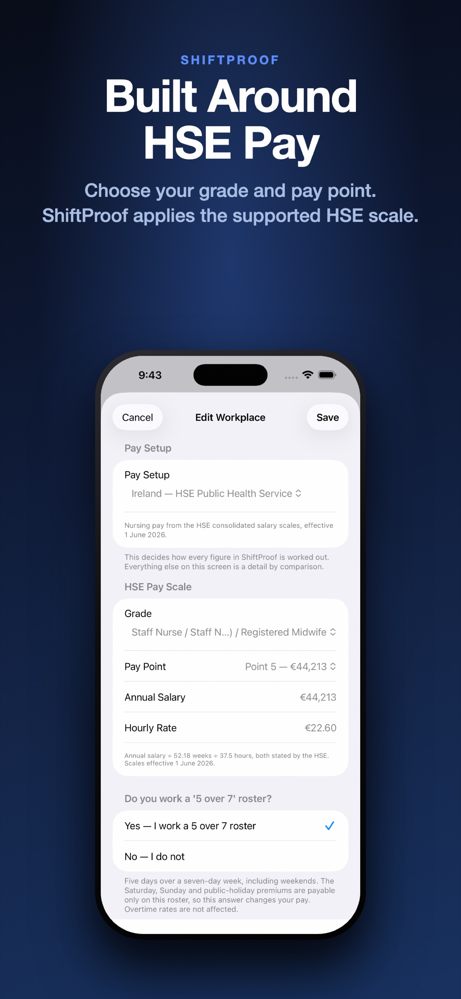
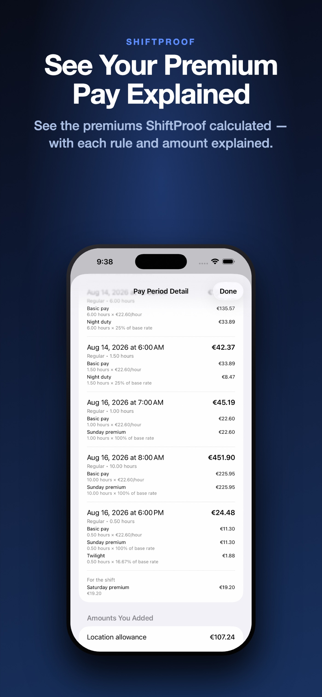
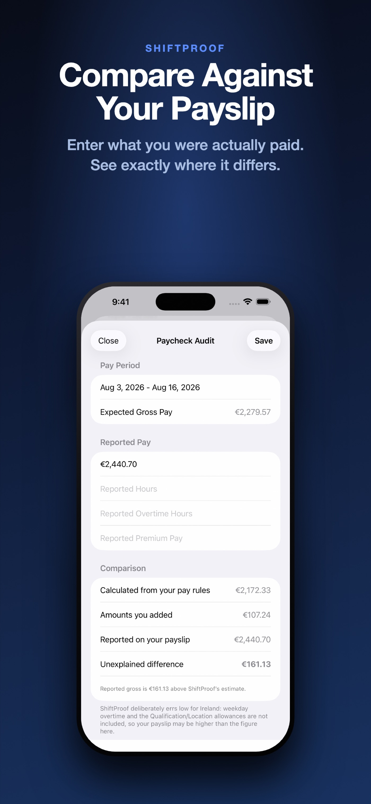

Ireland Beta
WageTally works out what a fortnight of your roster should come to, then lets you hold that figure against your payslip. It's built, it runs on iPhone, and we're looking for a small number of nurses and midwives to test it.
Join the Ireland betaFor nurses and midwives paid under HSE Public Health Service arrangements. If you work in the Irish health service, wherever you trained or qualified, you're who we're looking for.
Four things, and the fourth is the one that matters.
Choose your grade and pay point, and answer one question about whether you work a 5 over 7 roster. WageTally takes the salary from the published HSE scales and shows you the hourly rate it derived, and how.
Dates, start, finish, break. Nights that cross midnight are fine. Ireland's ten public holidays are already in there.
Every premium WageTally applied, named, with the rule and the amount beside it. Nothing is a black box — if a figure is there, you can see where it came from.
Enter what you were actually paid. WageTally shows you four lines: what it calculated, what you added yourself, what your payslip says, and what neither of them explains.
Real screens from the build you'd be testing.

The rate comes from the published scales, and the app shows you the arithmetic rather than asking you to trust it.

Night duty, Sunday, twilight, the Saturday allowance — each with the rule that produced it and the hours it applied to.

The gap between the payslip and everything WageTally can account for. That number is the point of this beta.
WageTally keeps its own arithmetic separate from anything you tell it, on every screen that shows money.
Figures WageTally worked out itself, from your grade, your pay point and the hours you recorded. Every one of them can be opened up and traced back to the rule that produced it.
Anything you enter yourself — an allowance, an on-call payment, arrears — stays labelled as yours. The app's own words are "You entered this. WageTally has not checked it." It never quietly folds your figures into its own.
WageTally produces an estimate of expected gross pay to compare against your payslip. It does not determine what an employer owes you, and it isn't payroll or legal advice.
We're looking for about ten nurses and midwives to use WageTally with a real fortnight of their own shifts and tell us where it gets things wrong.
We want you to find discrepancies. If WageTally says one thing and your payslip says another, that gap is the most useful thing you can send us. It might be a premium we've modelled incorrectly, a rule that works differently in your unit, or something we've knowingly left out. We'd rather learn that from ten people now than from ten thousand later.
Two questions we'd particularly like answered, because they'd resolve real gaps in what the app can calculate: what time normal day duty starts and finishes in your unit, and whether your unit pays a shift allowance instead of night duty and twilight.
Beyond that, you'd be using an app and telling us when the number looks wrong. There's no schedule, no minimum commitment, and no obligation to keep going if it isn't useful to you.
WageTally isn't on the Irish App Store yet — the beta is distributed through TestFlight, Apple's official app for testing.
Five short questions. We'll email you back.
A free app from Apple. Get TestFlight — you can install it now if you like.
We'll send you a TestFlight link, or you can join the beta directly. Opening it on your iPhone installs WageTally and puts you on the beta.
The app walks you through your first shift, but a few things are worth knowing that it doesn't spell out:
Five questions. We'll come back to you by email, and anything else we need to know we can work out in conversation.
Open this on your iPhone and TestFlight will install WageTally:
Install the betaWe'll be in touch by email in a day or two. If the link gives you any trouble, just reply and we'll sort it out.
No. You can take part without sending us anything at all — just tell us where the figure disagreed with what you were paid.
Later on, if you're willing, we may ask about the structure of a payslip: the earnings lines, their descriptions, hours and rates. If we ever do, we'd ask you to black out everything else first. We're interested in how pay is put together, not in who you are. We will never ask for your PPS number, staff or employee number, bank details, date of birth or address, and you never have to send anything you'd rather not.
Four today: Staff Nurse (including Staff Nurse Community and Registered Midwife, which share a scale), Mental Health Staff Nurse, Senior Staff Nurse (General), and Senior Staff Nurse (Mental Health).
Enhanced Nurse, the CNM grades, Clinical Nurse Specialist and Staff Midwife aren't in yet. If you pick your grade and it isn't listed, the app tells you so and stops — it won't put you on a different grade's scale. Apply anyway and tell us which grade you're on; knowing which ones to add next is useful to us.
Weekday overtime, deliberately. The HSE and the INMO describe the rates differently and neither defines "normal day duty" as a clock time, so WageTally shows those hours at basic pay and says so rather than guessing.
Twilight is paid for 18:00–20:00 only. Qualification and Location allowances, on-call and call-out payments aren't calculated either — you can add those yourself, and they stay marked as amounts you entered.
Every one of these gaps makes the figure lower than your payslip, never higher. The app lists them on screen next to the money.
It stays on your iPhone. WageTally has no account and no sign-in, doesn't sync to any cloud, and contains no analytics or tracking of any kind — your shifts and pay figures are not sent anywhere, including to us. The only thing that reaches us is what you choose to tell us directly.
No. Taking part is free, and everything you need to check a pay period against your payslip is in the free version.
WageTally is an independent app. It isn't affiliated with, endorsed by or connected to the HSE, the INMO, any hospital or any government body. The pay scales it uses are public documents.